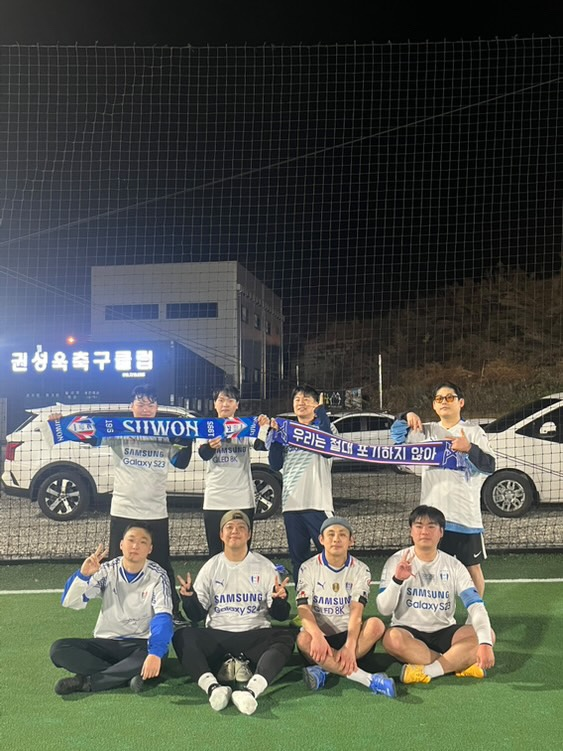

일상 사진

안녕하세요👋
저는 다양한 사람들과의 소통과 교류를 좋아하는 세오입니다.
사람마다 각기 다른 생각과 이야기를 가지고 있다는 점이
너무 매력적이라고 느껴요.
누군가의 경험담을 듣거나 새로운 시각을 접할 때마다 마치 새로운 세상을 탐험하는 듯한 기분이 들곤
합니다.
앞으로도 저는 다양한 사람들과의 만남을 통해 더 많은 것을 경험하고, 배워나가고 싶습니다.😊
12월 2일 한국 축구의 명가 수원삼성 블루윙즈가 강등을 당했던 당시 팬들의 모습이예요.
저도 이 사진 속에 있었습니다.....
많은 사람들이 슬픔을 견디지 못해 울음을 터뜨렸고, 제 여자친구도 경기 끝나기 25분 전부터 울음을 참지 못했습니다.
저 또한 많은 슬픔을 느끼고 가슴이 정말 아팠습니다.
정말 인생에서 잊지 못할 가장 슬픈 사건 중 하나입니다...
싸이의 기댈 곳은 지치고 힘들 때 따뜻한 위로를 건네주는 노래예요.
특히 "언제나 네 곁에 있을게"라는 가사가 마음을 울렸어요.
그 한마디가 마치 오래된 친구가 조용히 내 옆에 있어 주는 것처럼 큰 힘이 되더라고요.
힘든 순간마다 이 노래를 들으며 많은 위로를 받았던 것 같아요.